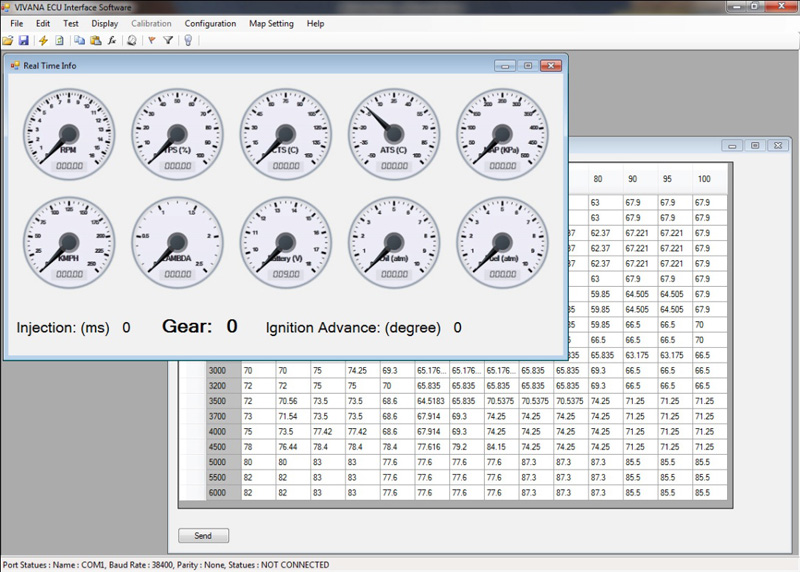
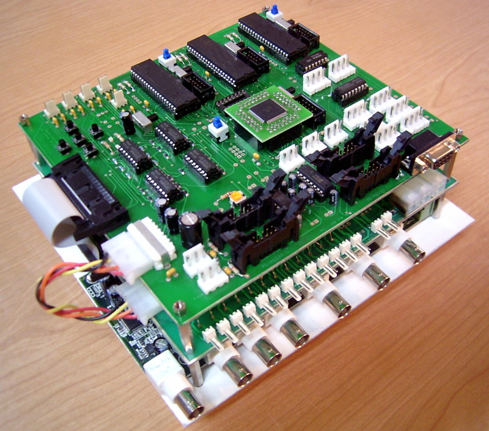
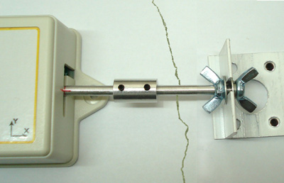
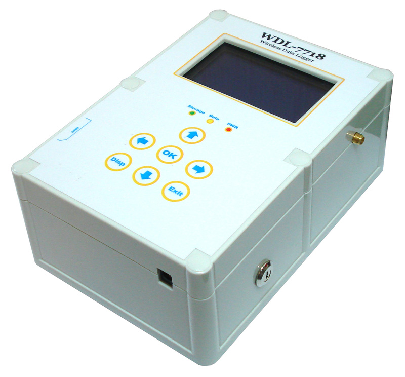
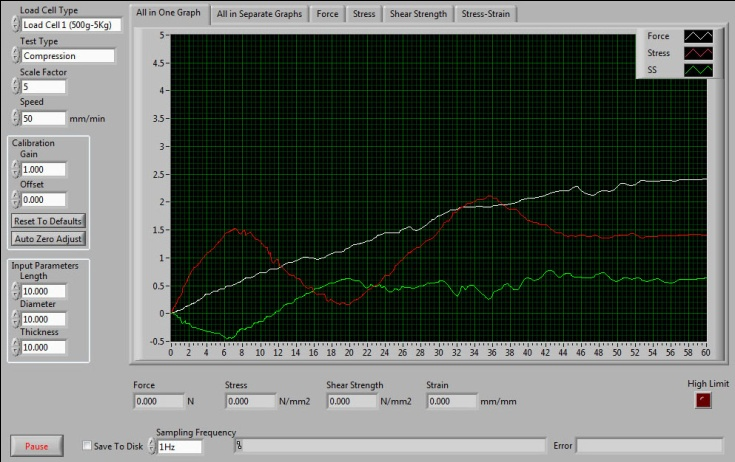

Automated Airband Radio
This is a project by KalScott Eng. and aims at design, simulation, and
development of an automated airband radio as an initial step towards development of completely autonomous UAVs. This project
incorporates location-based database accessing, GPS navigation, and airband radio deployment.
The system uses data from a GPS/IMU device and broadcasts the intent of the UAV to nearby traffic automatically.
Prototype of Engine Control Unit (ECU)
An engine control unit (ECU) is a type of electronic control unit that determines the amount of fuel and ignition
timing that a gasoline engine needs to keep running.
A programmable microcontroller-based ECU is designed and developed for
VIVANA vehicle. VIVANA is designed and manufactured by
supermileage student design team of Isfahan University of Technology.
This electronic control unit determines the amount of fuel, ignition timing and controls other parameters such as electronic throttle
actuator, cooler fan, starter motor, electrical clutch and transmission system modes. It is tried to design this ECU base on
AUTOSAR standards.
ECU's typically determine fuel injection and ignition advance time by reading values from multidimensional performance maps which are
programmed by an interface software beforehand.
The processing unit of this ECU is an 8-bit AVR microcontroller from Atmel
(ATMega128) which has 4KB of embedded E2PROM Memory.
ECU could be connected to PC via RS232 for uploading performance maps and monitoring real time engine information.

Parsa Humanoid Robot Controller Board
Parsa is a kid-size humanoid robot developed in Artificial Inelligence Lab of
Isfahan University of Technology. This robot has 20 degree of freedom as well as
a CCD image sensor, 3-axis acceleration sensors that detect gravity and 2-axis gyro sensors that detect angular velocity. Parsa is
participated in RoboCup Humanoid League and showed impressive capabilities such as coordination with other robots, recognizing
environmental features, and playing football.
The central controller board that is mounted on the back of the robot includes battery management circuits, servo motor drivers, PDA
connectivity interface, data acquisition for sensors and a memory for boot up sequence routine.

LynCean Rescue Robot Controller Board
LynCean is a semi-autonomous robot with outstanding capabilities for Urban Search and Rescue
(USAR) scenarios. It is small sized, light weight
and powerful, and has good stability and proper user interface for utilizing its capabilities. Four independent arms (also known as
Flippers) make it able to climb stairs, ramps and many other obstacles. Using a laser range finder and SLAM algorithms, LynCean
generates a practical map and sends it to operation site while in disaster arena. It is worth mentioning that the robot is designed
and manufactured by the student design team of the robotic center of
Isfahan University of Technology and is partially funded by Isfahan Firefighting
and Safety Services Organization (IFSO) and
Information and Communication Technology Institute (ICTI).
Controller board is an interface between embedded PC on the robot and the physical actuators and sensors. It is mainly based on four
Atmel microcontrollers that are interconnected with I2C bus. Each of them has special tasks, classified according to data flows. The
main parts of controller board are power management system, brushless and servo motor drivers, serial and analog interfaces for
sensors, protection circuits and a serial interface for the connection to the embedded PC. In addition, firmware on microcontrollers
includes fuzzy speed controller for brushless motors and data fusion algorithm for localization which is used in map generation.

Wireless Crack Monitoring System
This device is an effective tool for structural health monitoring that measures the growth of cracks on walls. This
project was funded by Beh Azmoon Anahita Co. and
Iran's Cultural Heritage Organization.
This system includes high resolution displacement sensors which measure very small movements in two orthogonal axes and a wireless
communication module to send recorded data to a data logger. The gathered information is then saved on a memory and sent to a server.
It uses the widely-available GSM/GPRS network to send monitoring data and alerts to a number of users via FTP and SMS. Temperature and
moisture sensors are also embedded in this system.
This module is extremely light weight and works with 2 AAA Alkaline batteries for up to 4 years. Moreover, up to 32 devices can send
collected data to one data logger located nearby.


Stand-alone Data Logger
This data logger can collect analog data from 10 channels with ultimate resolution of 16 bits in different ranges from
thermocouple EMF to voltages up to 10 V or even currents from mA to 1A. It is absolutely accurate due to perfect design and modern
equipment. Cold junction compensation is also available for thermocouple channels.
Using the OSD, user can easily work with the device and change its configurations to desired settings. For example, the user can set
sampling frequency, input type and range for each channel, data file format and serial interface configurations. The data logger can
either save data into an MMC memory or send them to a PC via serial connectivity. The logger can save data on memory in text, MS Word
document or MS Excel table formats.
PC-Based Data Acquisition System
This system is an ideal choice for real-time monitoring and analysis of different processes with embedded sensors and
also for controlling different types of actuators. The interface of the system is a data acquisition card by
Advantech. Signal conditioners with variable gain and offset and
also protection circuits, are designed to make the system compatible with a variety of input signals. The computer software that is
developed by LabVIEW can also send commands in analog or digital forms. These
signals are then amplified by some electronic circuits.
This device has 16 analog input with resolution of 12-bits, 16 digital input, 16 digital output, and two analog output channels. Cold
junction compensation for thermocouples is also embedded.
